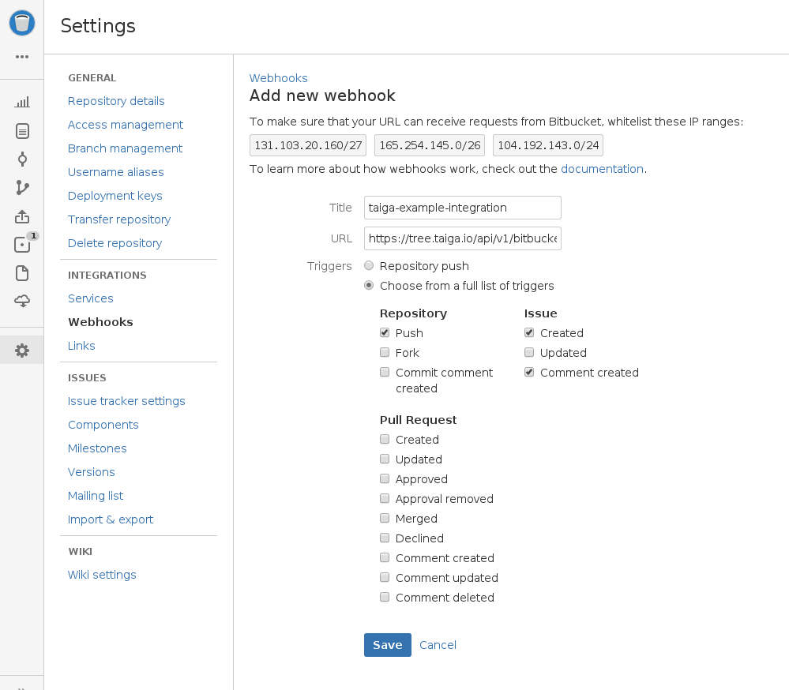

Bitbucket is a web-based hosting service for projects that use either the Mercurial (since the origin) or Git (since October 2011[1]) revision control systems.
First things first, Bitbucket is a huge platform with a lot of features. Integration will always take time so please be patient. If you need a specific integration and you feel ready to get a machete and get into the taiga, please review our API Docs.
If you need help in a specific feature, you can always get in touch with the community through our mailing list
Go to Admin > Integrations > Bitbucket
Go to your repository

The status of any issue, task or user story can be changed via commit message. You may want to read more about this feature